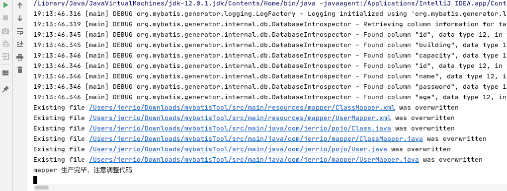

网上有很多类似的文章介绍了如何在Springboot中使用MybatisGenerator，但是大部分教程里有很多冗余的配置，今天给大家来纯净版，只保留所需要的配置使用MybatisGenerator工具。
Mybatis要写许多xml文件，sql语句，DAO接口，但大部分都是通用的增删改查操作。为了解决这个问题，Mybatis Generator插件应运而生，能够通过数据库表自动生成三个文件：
- DAO接口
- 表对应的实体类
- mapper.xml文件
整体文件结构示例：

具体步骤如下：
1. 创建数据库表
Demo项目文件里提供了创建数据库的sql脚本，在MySQLWorkbench里运行一下就好了。
2. 在pom.xml里添加依赖
依赖主要有三个，代码如下：
1
2
3
4
5
6
7
8
9
10
11
12
13
14
15
16
17
18
19
20
21
22
23
24
25
26
27
28
29
30
31
32
33
34
35
36
37
38
39
40
41
42
43
44
45
46
47
48
49
| <properties>
<project.build.sourceEncoding>UTF-8</project.build.sourceEncoding>
<java.version>11</java.version>
<tk-mapper.version>1.2.4</tk-mapper.version>
<mybatis-generator.version>1.4.0</mybatis-generator.version>
<mysql-connector.version>8.0.22</mysql-connector.version>
</properties>
<dependencyManagement>
<dependencies>
<dependency>
<groupId>tk.mybatis</groupId>
<artifactId>mapper-spring-boot-starter</artifactId>
<version>${tk-mapper.version}</version>
</dependency>
<!-- mybatis 逆向生成工具 -->
<dependency>
<groupId>org.mybatis.generator</groupId>
<artifactId>mybatis-generator-core</artifactId>
<version>${mybatis-generator.version}</version>
</dependency>
<!-- mysql 连接 -->
<dependency>
<groupId>mysql</groupId>
<artifactId>mysql-connector-java</artifactId>
<version>${mysql-connector.version}</version>
</dependency>
</dependencies>
</dependencyManagement>
<dependencies>
<!--tk.mapper -->
<dependency>
<groupId>tk.mybatis</groupId>
<artifactId>mapper-spring-boot-starter</artifactId>
</dependency>
<!-- mybatis 逆向生成工具 -->
<dependency>
<groupId>org.mybatis.generator</groupId>
<artifactId>mybatis-generator-core</artifactId>
<scope>compile</scope>
<optional>true</optional>
</dependency>
<dependency>
<groupId>mysql</groupId>
<artifactId>mysql-connector-java</artifactId>
<scope>runtime</scope>
</dependency>
</dependencies>
|
其中 tk.mybatis 是用来简化 Mapper 里冗余代码的插件。原生 Mybatis Generator 的 mapper.xml 中增删改查，按条件搜索等冗余sql代码太多了，所以我多引了一个这个包。
使用这个包需要添加一个接口类：
1
2
3
4
5
6
7
8
| package com.jerrio.utils;
import tk.mybatis.mapper.common.Mapper;
import tk.mybatis.mapper.common.MySqlMapper;
public interface MyMapper<T> extends Mapper<T>, MySqlMapper<T> {
//FIXME 特别注意，该接口不能被扫描到，否则会出错
}
|
并在generator.xml中添加/替换mapper生成插件（完整generator.xml下面会有展示）：
1
2
3
| <plugin type="tk.mybatis.mapper.generator.MapperPlugin">
<property name="mappers" value="com.jerrio.utils.MyMapper"/>
</plugin>
|
3. 添加generator.xml
1
2
3
4
5
6
7
8
9
10
11
12
13
14
15
16
17
18
19
20
21
22
23
24
25
26
27
28
29
30
31
32
33
34
35
36
37
38
39
40
41
42
43
44
45
46
47
48
49
| <?xml version="1.0" encoding="UTF-8"?>
<!DOCTYPE generatorConfiguration
PUBLIC "-//mybatis.org//DTD MyBatis Generator Configuration 1.0//EN"
"http://mybatis.org/dtd/mybatis-generator-config_1_0.dtd">
<generatorConfiguration>
<properties resource="generator.properties"/>
<context id="MysqlContext" targetRuntime="MyBatis3Simple" defaultModelType="flat">
<property name="beginningDelimiter" value="`"/>
<property name="endingDelimiter" value="`"/>
<property name="autoDelimitKeywords" value="true"/>
<property name="javaFileEncoding" value="UTF-8"/>
<!-- <!– 为模型生成序列化方法–>-->
<!-- <plugin type="org.mybatis.generator.plugins.SerializablePlugin"/>-->
<!-- <!– 为生成的Java模型创建一个toString方法 –>-->
<!-- <plugin type="org.mybatis.generator.plugins.ToStringPlugin"/>-->
<!-- <!–生成mapper.xml时覆盖原文件–>-->
<!-- <plugin type="org.mybatis.generator.plugins.UnmergeableXmlMappersPlugin" />-->
<!-- 简化Mapper插件 -->
<plugin type="tk.mybatis.mapper.generator.MapperPlugin">
<property name="mappers" value="com.jerrio.utils.MyMapper"/>
</plugin>
<jdbcConnection driverClass="${jdbc.driverClass}"
connectionURL="${jdbc.connectionURL}"
userId="${jdbc.userId}"
password="${jdbc.password}">
<!-- 解决mysql驱动升级到8.0后不生成指定数据库代码的问题，防止生成其他库同名表-->
<property name="nullCatalogMeansCurrent" value="true"/>
</jdbcConnection>
<!-- 对应生成的pojo所在包 -->
<javaModelGenerator targetPackage="com.jerrio.pojo" targetProject="src/main/java"/>
<!-- 对应生成的mapper所在目录 -->
<sqlMapGenerator targetPackage="mapper" targetProject="src/main/resources"/>
<!-- 配置mapper对应的java映射 -->
<javaClientGenerator targetPackage="com.jerrio.mapper" targetProject="src/main/java"
type="XMLMAPPER"/>
<!-- 生成全部表tableName设为% -->
<table tableName="%" delimitIdentifiers="true">
<generatedKey column="id" sqlStatement="MySql" identity="true"/>
</table>
<!-- <table tableName="order">-->
<!-- <generatedKey column="id" sqlStatement="MySql" identity="true"/>-->
<!-- </table>-->
</context>
</generatorConfiguration>
|
jdbcConnection那栏换成自己的配置就可以（我另写了个配置文件作引人），比如
1
2
3
4
| jdbc.driverClass=com.mysql.cj.jdbc.Driver
jdbc.connectionURL=jdbc:mysql://localhost:3306/test
jdbc.userId=root
jdbc.password=root
|
4. 添加 GeneratorDisplay.java
1
2
3
4
5
6
7
8
9
10
11
12
13
14
15
16
17
18
19
20
21
22
23
24
25
26
27
28
29
30
31
32
33
34
35
36
37
38
39
40
41
42
43
44
45
46
47
| package com.jerrio;
import java.io.InputStream;
import java.util.ArrayList;
import java.util.List;
import org.mybatis.generator.api.MyBatisGenerator;
import org.mybatis.generator.config.Configuration;
import org.mybatis.generator.config.xml.ConfigurationParser;
import org.mybatis.generator.internal.DefaultShellCallback;
public class GeneratorDisplay {
public void generator() throws Exception{
//MBG 执行过程中的警告信息
List<String> warnings = new ArrayList<String>();
//当生成的代码重复时，覆盖原代码
boolean overwrite = true;
//读取我们的 MBG 配置文件
InputStream is = GeneratorDisplay.class.getResourceAsStream("/generator.xml");
ConfigurationParser cp = new ConfigurationParser(warnings);
Configuration config = cp.parseConfiguration(is);
is.close();
DefaultShellCallback callback = new DefaultShellCallback(overwrite);
//创建 MBG
MyBatisGenerator myBatisGenerator = new MyBatisGenerator(config, callback, warnings);
//执行生成代码
myBatisGenerator.generate(null);
//输出警告信息
for (String warning : warnings) {
System.out.println(warning);
}
}
public static void main(String[] args) throws Exception {
try {
GeneratorDisplay generatorSqlmap = new GeneratorDisplay();
generatorSqlmap.generator();
System.out.println("mapper 生产完毕，注意调整代码");
} catch (Exception e) {
e.printStackTrace();
}
}
}
|
5. 执行编译
按以上配置完成后就可以点GeneratorDisplay运行了，当你在控制台看到类似以下输出时，代表运行成功。
